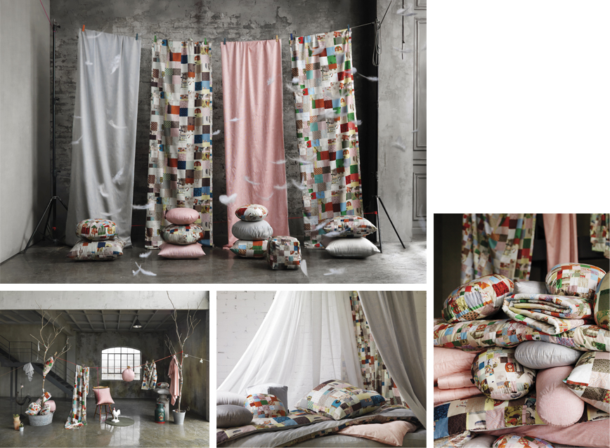

2013 Spring bogg by Chang Eung Bok
In 2013 spring, premium bedding brand bogg presents 'blooming provence,' full of nature and flower of spring.
Design philosophy of Chang Eung-Bok, which is about incorporating Korean culture & pattern with modern sensibility that communicates with this era, creates distinctive story of bogg with unique language while presenting Korean sensibility.
Each pattern of 'blooming Provence,' 2013 spring collection, is strong and lyrical just like a poem. It is all the more precious since it tells us the memory in Provence, reinterpreting last autumn¡¯s 'Provence dream' collection to a new version.
'Provence dream,' beloved so much. Nostalgia and love for the collection unable to see again brought a new version - 'blooming Provence' which contains the fragment of memory in Provence.
On top of the entire pattern are applied bogg's unique patterns that were inspired by motives from nature and scenery, while each pattern tells its own story. Then the patterns flow to the bottom, fragments into pieces like a piece of memory, creates new patterns. From a distance, it looks like pixels of a magnified picture, giving us a modern feeling. Simple flower marks that can be seen from items in a boudoir of a Korean lady are elegant and lovely. In march 2013, it came down to our bedroom as flower petals dancing in the wind, or cherry blossoms telling us spring has come - just like a popular song.
|